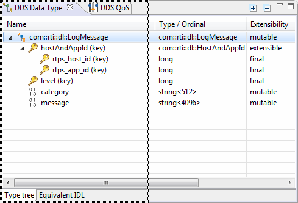
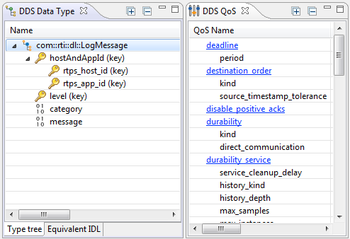
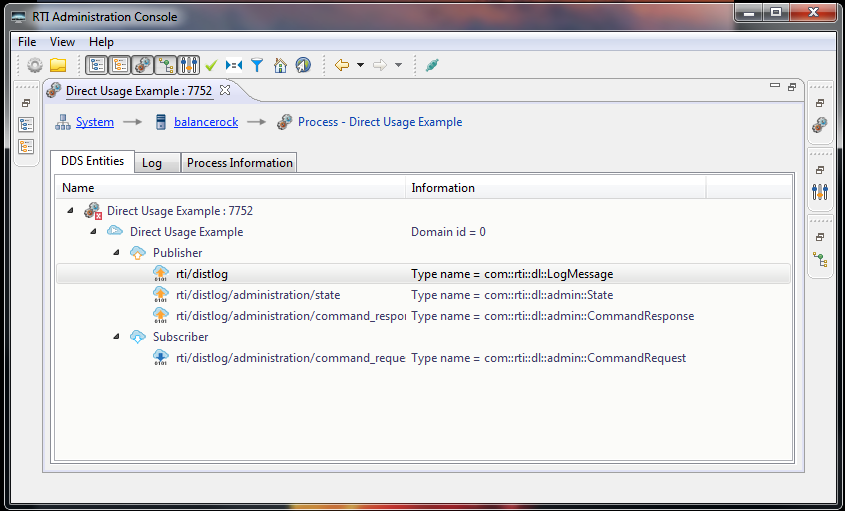

Tutorial Step 8: Customize the Layout
Admin Console is built on top of
the Eclipse framework, which is very flexible and allows you to change
the layout. The following provides some useful tips and tricks on how
to customize your layout.
Docking:
You can redock most tabs in Admin Console. Simply click and hold
onto a tab, then drag it to the top, left, right, or bottom. A black
rectangle should appear, signaling you can dock to that area.

Once you see the dotted box, you can release the mouse and the
view will be docked to the desired area. Redocking is most useful when
you want to see multiple things at the same time. The following shows
a few different views.

Maximizing a view:
Some views, such has the Distributed Log view or the Service
Configuration view, have a lot of content that could use more screen
space. To maximize space for that view, simply double-click on the
tab. You can restore the original state by double-clicking on the tab
again.
